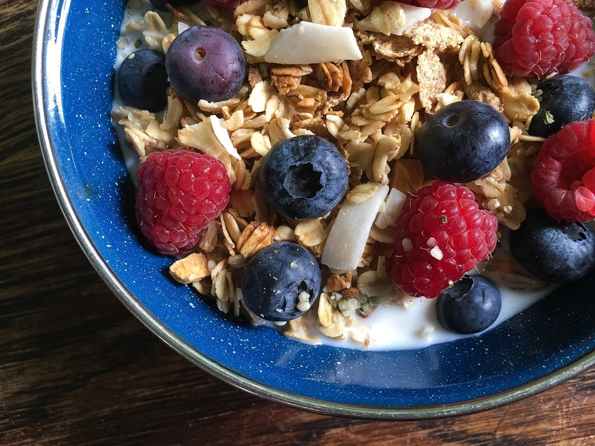

Granola
Home

"A bowl of granola with berries and granola” by Pixabay, CC0 1.0
Description
This recipe will show you how to make the granola base that can be added to any breakfast!
Ingredients
- 4 Cups of Rolled Oats
- 1 1/2 Cup raw nuts
- 1 teaspoon salt
- 1/2 teaspoon cinnamon
- 1/2 cup olive oil
- 1/2 cup maple syrup
- 1 teaspoon vanilla extract
- Any other add ons! (e.g. raisins, chocolate chips, etc.)
Steps
- Preheat oven to 350F.
- Line large baking sheet with parchment paper.
- Mix together oats, nuts, salt and cinnamon.
-
Add oil, maple syrup and vanilla. Stir until everything is coated.
Spread mixture onto baking sheet.
- Place in oven to bake for 22mins (stir halfway).
-
Remove from oven and let cool for about 45mins. Break up
cooled granola into chunks by stiring with spoon.
- Keep granola in ziploc bag or airtight container.